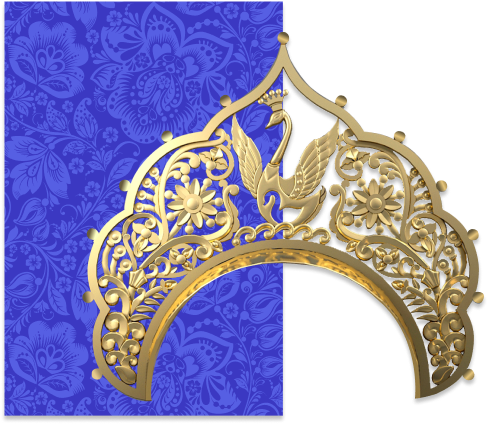

КОКОШНИКИ
старинный русский
головной убор
кокошник
головной убор
кокошник
Кокошник представляет собой лёгкий веер из толстой бумаги, металлической ленты или венца, пришитых к
шапочке или волоснику
он состоит из убранного начельника и донца, или же начельника и волосника, со спуском позади ленты.
Основа изготавливалась из штофа и бархата, кумача на твердой основе из проклеенного или простеганного
холста, картона, картузной бумаги.
Сверху гребень украшали орнаментом: искусственными или живыми цветами, парчой, позументом, бисером,
бусами, речным жемчугом
(с XVI века добывался в озере Ильмень), золотыми нитями, фольгой, стеклом, у наиболее богатых —
драгоценными камнями. Вышивкой золотыми нитками часто покрывалась и затылочная часть.

ЛЕБЕДУШКА
Олицетворяет ребёнка, начало жизненного пути, развитие, основу существования, осознание
своего
«Я», детство и продолжение рода. Лебеди ‒символ русских сказок, образ красоты, чистоты души,
верности, вечной любви. Также, образ лебедей нашёл отражение в русской классической поэзии
А.С.Пушкина и в музыке П.И.Чайковского.
БОГАТСТВО РУССКОЙ ПРИРОДЫ
Это гармония природных сил, законы и принципы, причинно-следственные связи и жизненный опыт.
Красота и просторы русской природы, шум берёзовых рощ, аромат бескрайних полей, пение птиц,
запах лесов — все эти образы понятны и дороги любой русскому человеку. Это то, что
вдохновляет,
питает и придаёт сил! Важно помнить и ценить это в наш цифровой и урбанистический век.
Многообразная, щедрая, неизменно прекрасная – от полярных широт до южного взморья. Она веками
вдохновляет поэтов и художников, оставаясь национальным достоянием в XXI веке.
ЛЮБОВЬ
Любовь – дыхание нашей души. Это великая движущая сила, сила самой жизни! Любовь воплощает в
себе высокое, светлое, нежное, безграничное и прекрасное чувство.
ЛУНА
Символ женского начала, тайной мудрости. Дарует способность творить и преодолевать.
Олицетворяет
спокойствие, мягкость, возрождение, осмысление, интуицию, источник потока мыслей и идей.
Отсюда
и говорят: «Утро вечера мудренее!»
СОЛНЦЕ
Один из главных славянских символов, несущий собой свет истины, жизни, добра, красоты и
благополучия. Символизирует мужское начало, ум, знания, развитие, воплощение идей и
достижение
целей.
ДУХОВНОСТЬ
Это союз двух начал ‒ божественной и человеческой природы. Олицетворение крепкого людского
духа,
просветления и обретения духовности. Матрёшка в данном кокошнике неслучайно шестая по счёту,
ведь именно за 6 дней был сотворён мир согласно священным писаниям.
МАТУШКА РОССИЯ
Это олицетворение божественного материнского начала с его теплом, заботой и безусловной
любовью.
Воплощает образ плодородной кормилицы, изобилия и богатства. Символ гармонии, постоянства и
совершенства мира.
Культура россии в
кокошнике
кокошнике
Кокошник представляет собой лёгкий веер из толстой бумаги, металлической ленты или венца, пришитых к
шапочке или волоснику
он состоит из убранного начельника и донца, или же начельника и волосника, со спуском позади ленты.
Основа изготавливалась из штофа и бархата, кумача на твердой основе из проклеенного или простеганного
холста, картона, картузной бумаги.
Сверху гребень украшали орнаментом: искусственными или живыми цветами, парчой, позументом, бисером,
бусами, речным жемчугом
(с XVI века добывался в озере Ильмень), золотыми нитями, фольгой, стеклом, у наиболее богатых —
драгоценными камнями. Вышивкой золотыми нитками часто покрывалась и затылочная часть.
КОНТАКТНЫЕ ДАННЫЕ
Адрес
Кутузовский проспект, 2/1, стр. 1, Москва, Россия
©2021 “МАТРЁШКИ” Все права защищенны
©2021 “МАТРЁШКИ” Все права защищенны
Почта